Sick Trans-sex Gloria
Sick Trans-sex Gloria is a series of sci-fi inspired costumes and a virtual environment imagining armors of transgender resilience and a distinctly femme trans-futurism. The piece draws inspiration from diffuse online queer covens, girls in the Black Bloc, and the cybernetic ecstasy of the blur between prosthesis (whether hormone or silicone) and body. This experiment in queer world building endeavors to manifest as physical a culture often incubated in the ephemeral.
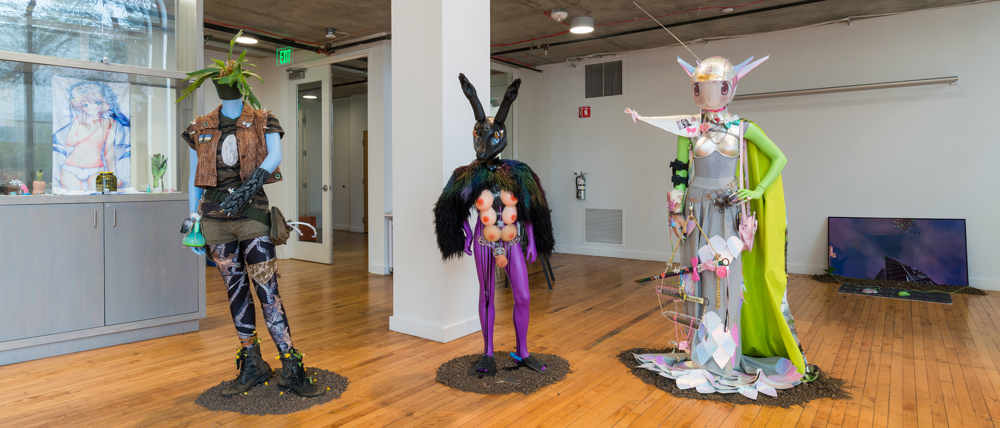
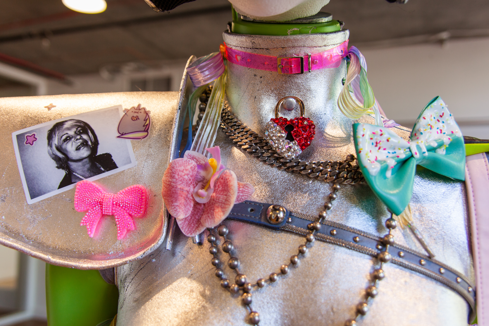
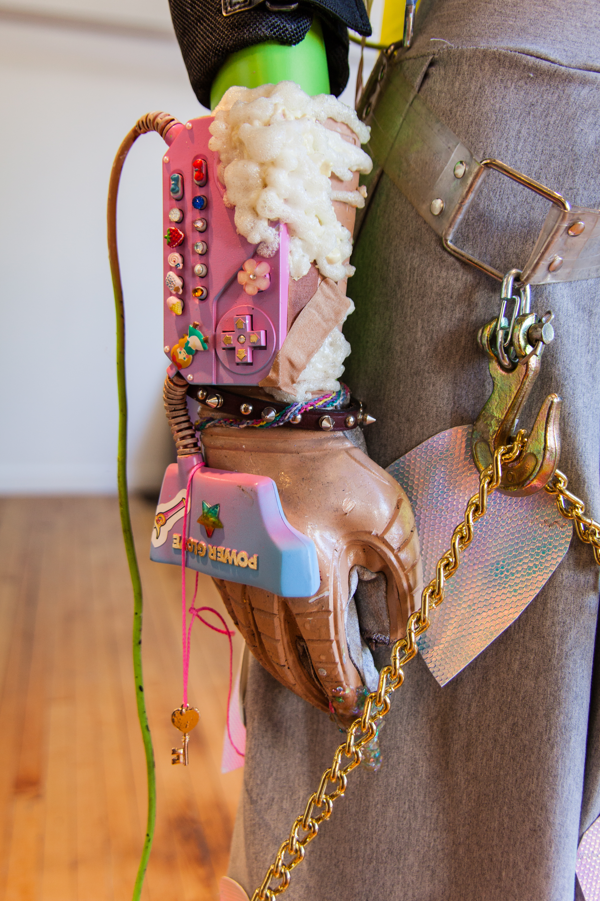
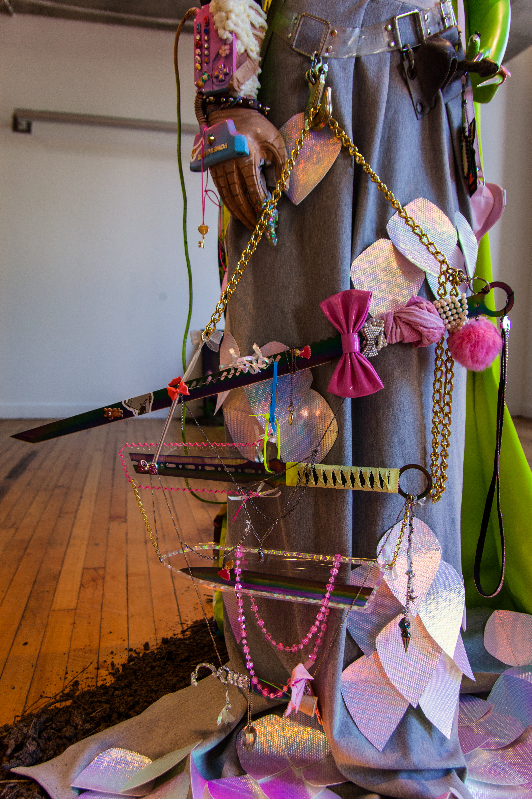
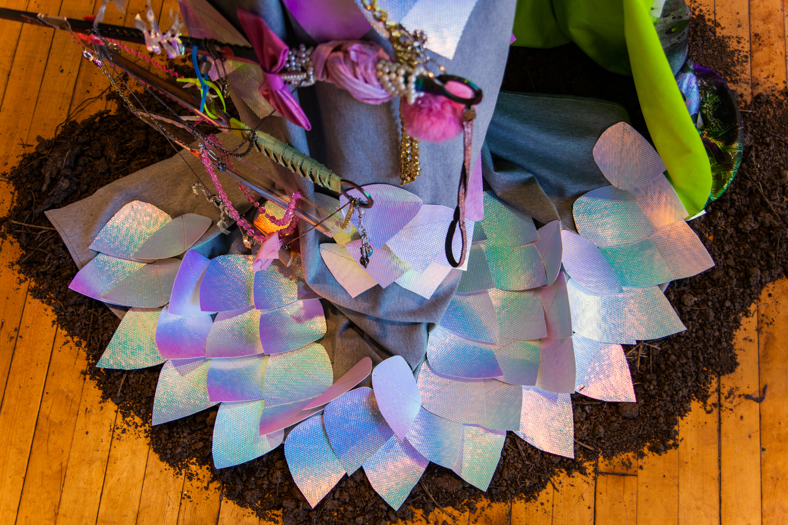
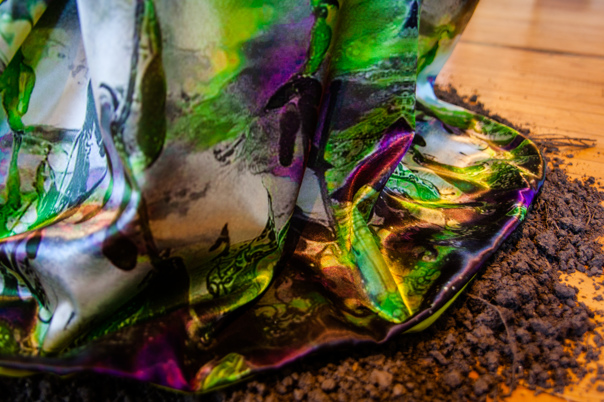
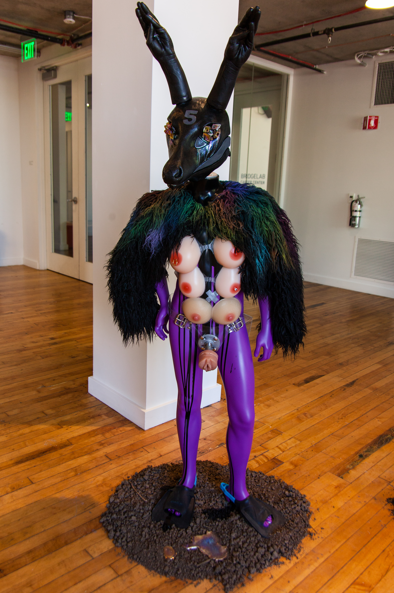
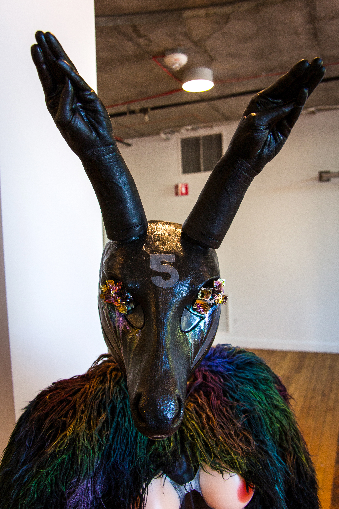
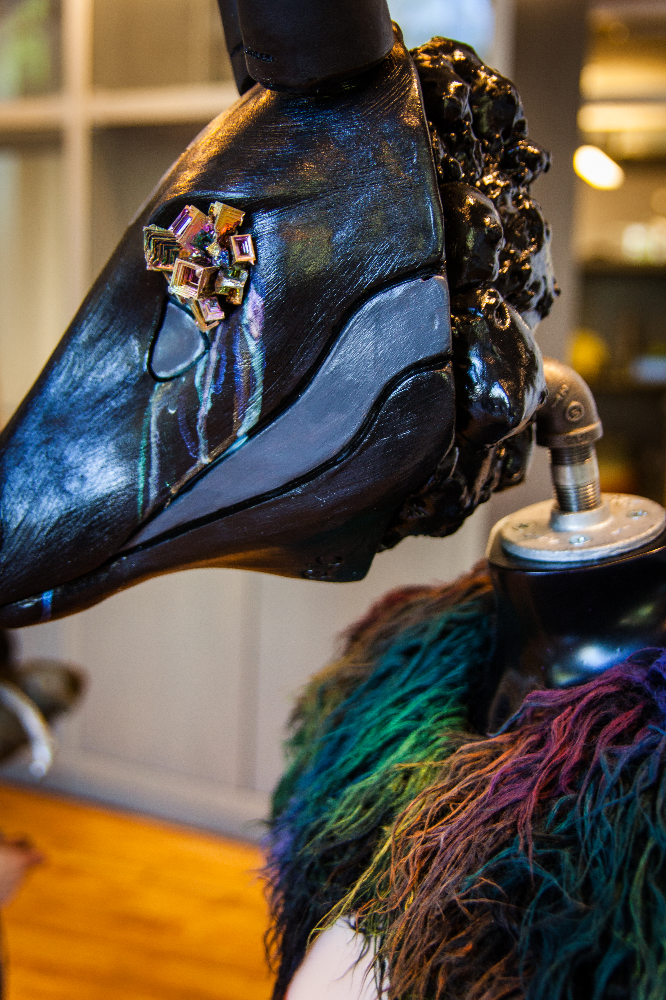
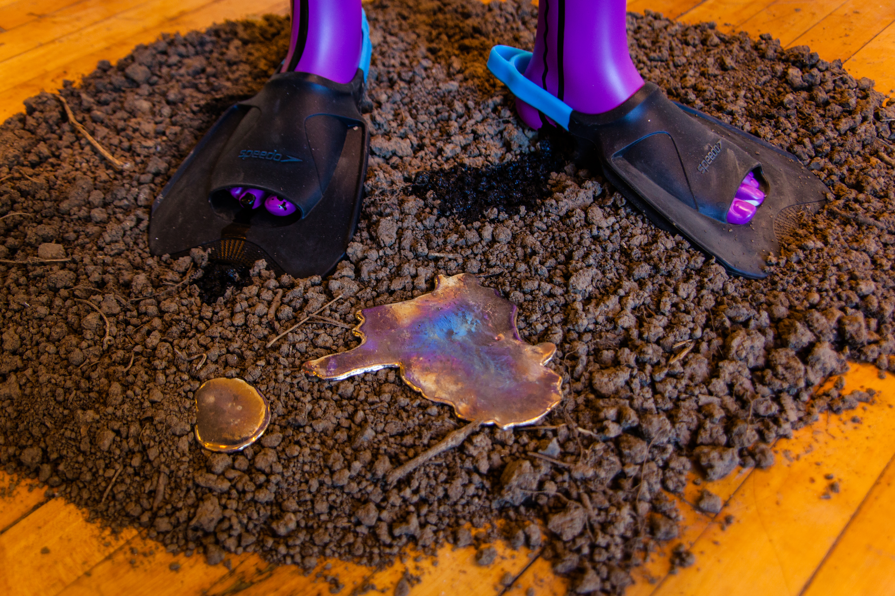
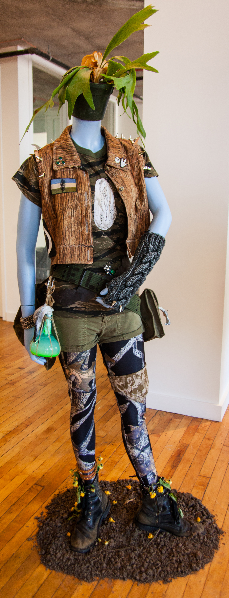
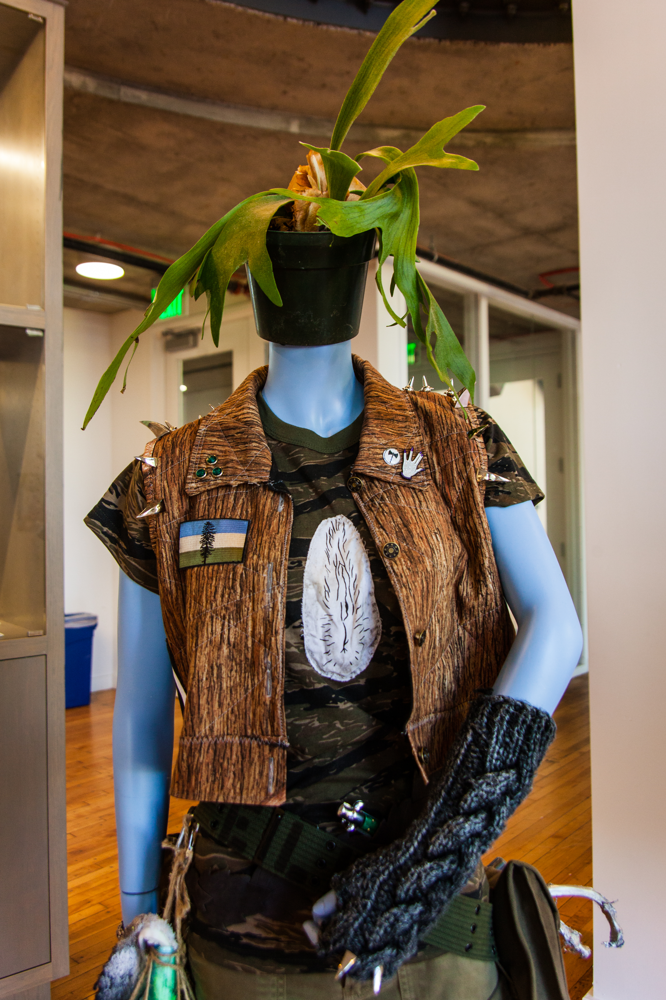
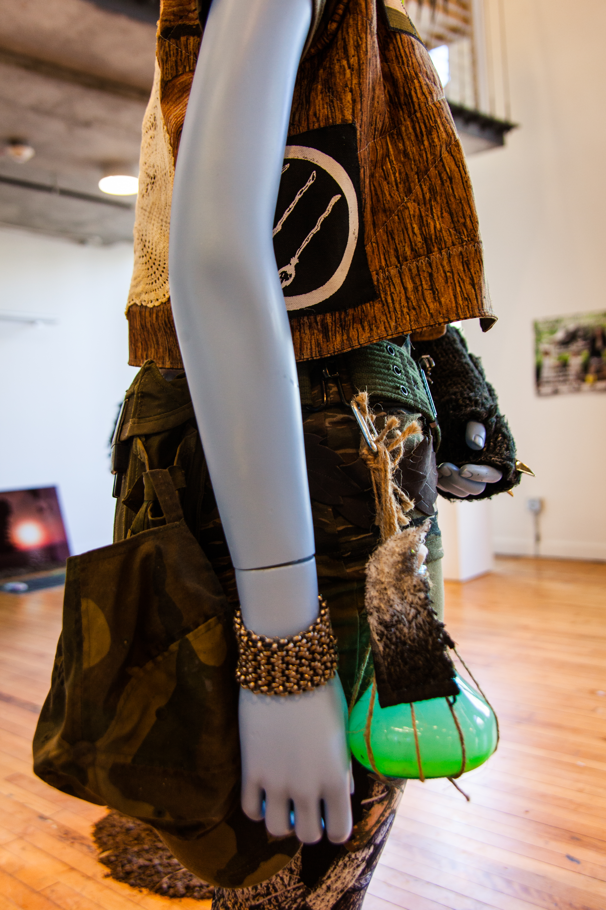
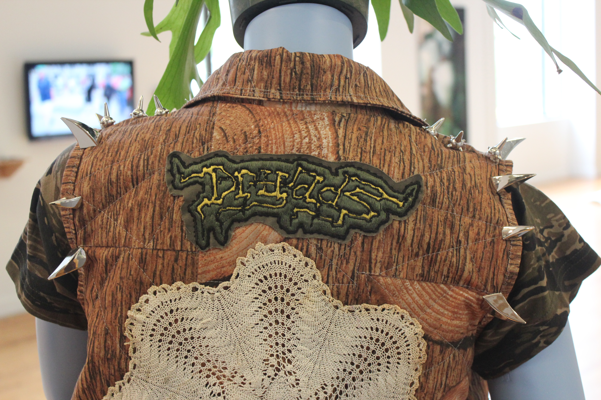
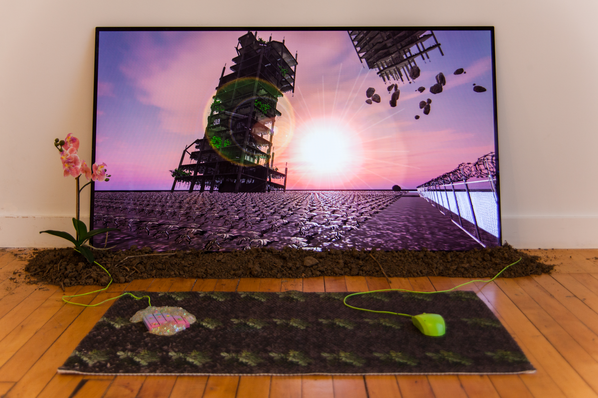
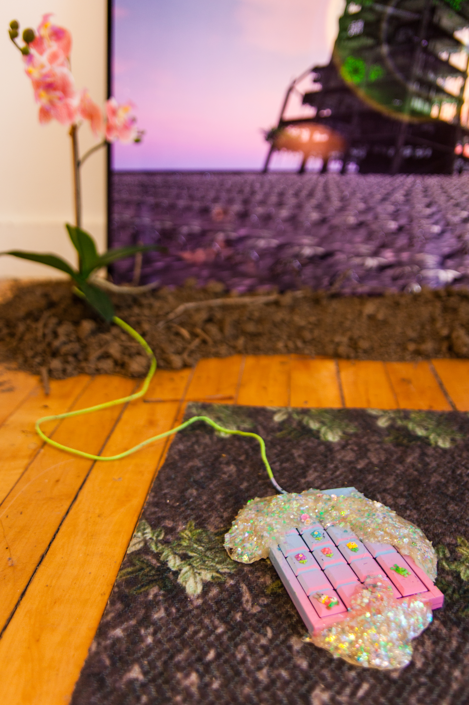
Press for Sick Trans-sex Gloria
This work was funded in part by the Regional Arts &
Culture Council of Oregon.
(Photos courtesy of Rachel Wolf, and Mario Gallucci)